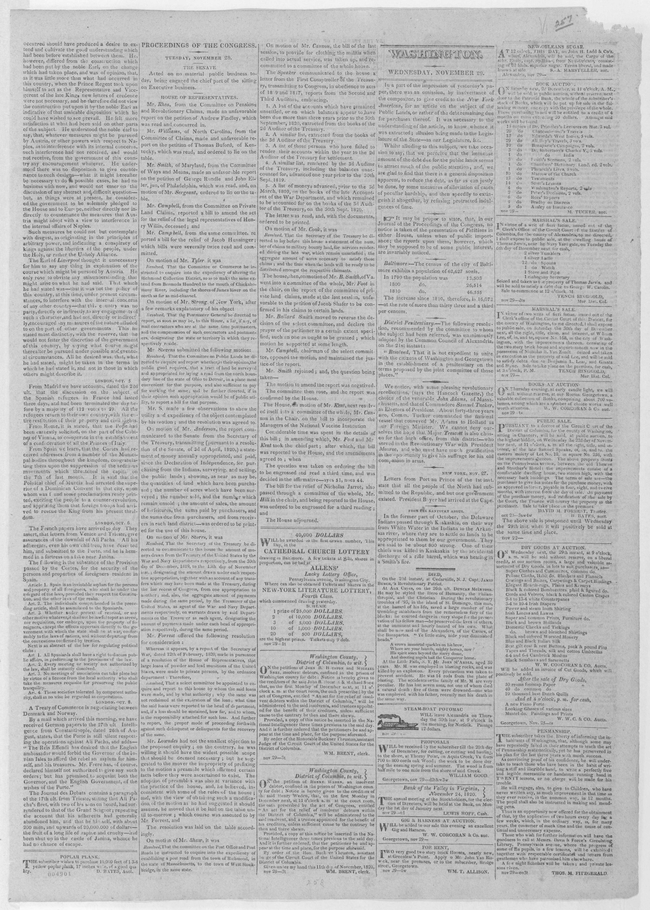

A Revolution Next DoorUna revolución al lado
The eraLa era
American newspapers discovered Hispaniola through Haiti's revolution. When the former French colony of Saint-Domingue declared itself independent in 1804, editors in the United States reported the new republic with fascination, fear, and commercial interest mixed together: many Southern readers saw in it a warning about enslaved people rising, merchants saw ports and coffee, and everyone watched to see whether the experiment would survive. The east of the island entered American pages mostly as background to that story — a stage for Haiti's drama and for Atlantic trade.
Los periódicos estadounidenses descubrieron La Española a través de la revolución de Haití. Cuando la antigua colonia francesa de Saint-Domingue se declaró independiente en 1804, los editores de Estados Unidos informaron sobre la nueva república con fascinación, miedo e interés comercial mezclados: muchos lectores del Sur veían en ella una advertencia sobre la rebelión de los esclavizados, los comerciantes veían puertos y café, y todos observaban si el experimento sobreviviría. El este de la isla entró en las páginas estadounidenses sobre todo como fondo de esa historia: un escenario para el drama de Haití y para el comercio atlántico.
On the ground, the east lived those years differently. Spanish Santo Domingo was poor and thinly settled, seized by France, returned to Spain in 1809, and briefly independent in 1821. Where the coverage framed an island, Dominicans experienced collapsing authority and an approaching power: the east's brief independence ended as President Boyer's government in the west prepared to take control of the whole island. The article below, a Washington paper of November 1820, shows the habit in miniature: it notes President Boyer's arrival at the Cape and an obituary for Duncan McIntosh, praised for risking his life during the revolutionary troubles of 1793 to save numerous inhabitants — the revolution of a generation earlier still setting the terms in which the island was read.
En el terreno, el este vivió esos años de otro modo. El Santo Domingo español era pobre y poco poblado, tomado por Francia, devuelto a España en 1809 y brevemente independiente en 1821. Donde la cobertura presentaba una isla, los dominicanos vivieron el colapso de la autoridad y una potencia que se acercaba: la breve independencia del este terminó cuando el gobierno de Boyer en el oeste se preparó para tomar el control de toda la isla. El artículo que sigue, un periódico de Washington de noviembre de 1820, muestra el hábito en miniatura: anota la llegada del presidente Boyer al Cabo y un obituario de Duncan McIntosh, elogiado por haber arriesgado su vida durante los disturbios revolucionarios de 1793 para salvar a numerosos habitantes: la revolución de una generación antes seguía fijando los términos en que se leía la isla.
PlatesLáminas

In the former part of October, the Delaware Indians passed through
Key articlesArtículos clave
In the former part of October, the Delaware Indians passed throughEn la primera parte de octubre, los indios Delaware pasaron por
Letters from Port au Prince of the 1st inst. state that all the people of the North had submitted to the Republic, and but one government existed. President Boyer had arrived at th…
ErasEras · The era's articlesLos artículos de la era · On the timelineEn la cronología